Annotation
В одном из писем к матери Сент-Экзюпери признался: “Мне ненавистны люди, пишущие ради забавы, ищущие эффектов. Надо иметь что сказать”. Ему, романтику неба, не чуравшемуся земных радостей, любившему, по свидетельству друзей, “писать, говорить, петь, играть, докапываться до сути вещей, есть, обращать на себя внимание, ухаживать за женщинами”, человеку проницательного ума со своими достоинствами и недостатками, но всегда стоявшему на защите общечеловеческих ценностей, было “что сказать”. И он это сделал: написал сказку “Маленький принц”, о самом важном в этой жизни, жизни на планете Земля, все чаще такой неласковой, но любимой и единственной.
Антуан де Сент-Экзюпери
Маленький принц
В книге говорилось: «Удав заглатывает свою жертву целиком, не жуя. После этого он уже не может шевельнуться и спит полгода подряд, пока не переварит пищу».
Я много раздумывал о полной приключений жизни джунглей и тоже нарисовал цветным карандашом свою первую картинку. Это был мой рисунок №1. Вот что я нарисовал:
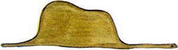
Я показал мое творение взрослым и спросил, не страшно ли им.
— Разве шляпа страшная? — возразили мне.
А это была совсем не шляпа. Это был удав, который проглотил слона. Тогда я нарисовал удава изнутри, чтобы взрослым было понятнее. Им ведь всегда нужно все объяснять. Это мой рисунок №2:
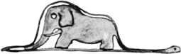
Взрослые посоветовали мне не рисовать змей ни снаружи, ни изнутри, а побольше интересоваться географией, историей, арифметикой и правописанием. Вот как случилось, что шести лет я отказался от блестящей карьеры художни�говорил с ними об игре в бридж и гольф, о политике и о галстуках. И взрослые были очень довольны, что познакомились с таким здравомыслящим человеком.
II
Так я жил в одиночестве, и не с кем было мне поговорить по душам. И вот шесть лет тому назад пришлось мне сделать вынужденную посадку в Сахаре. Что-то сломалось в моторе моего самолета. Со мной не было ни механика, ни пассажиров, и я решил, что попробую сам все починить, хоть это и очень трудно. Я должен был исправить мотор или погибнуть. Воды у меня едва хватило бы на неделю.
Итак, в первый вечер я уснул на песке в пустыне, где на тысячи миль вокруг не было никакого жилья. Человек, потерпевший кораблекрушение и затерянный на плоту посреди океана, — и тот был бы не так одинок. Вообразите же мое удивление, когда на рассвете меня разбудил чей-то тоненький голосок. Он сказал:
— Пожалуйста… нарисуй мне барашка!
— А?..
— Нарисуй �width="2em" align="justify">— Но… что ты здесь делаешь?
И он опять попросил тихо и очень серьезно:
— Пожалуйста… нарисуй барашка…
Все это было так таинственно и непостижимо, что я не посмел отказаться. Как ни нелепо это было здесь, в пустыне, на волосок от смерти, я все-таки достал из кармана лист бумаги и вечное перо. Но тут же вспомнил, что учился-то я больше географии, истории, арифметике и правописанию, и сказал малышу (немножко даже сердито сказал), что не умею рисовать. Он ответил:
— Все равно. Нарисуй барашка.
Так как я никогда в жизни не рисовал баранов, я повторил для него одну из двух старых картинок, которые я только и умею рисовать — удава снаружи. И очень изумился, когда малыш воскликнул:
— Нет, нет! Мне не надо слона в удаве! Удав слишком опасен, а слон слишком большой. У меня дома все очень :
— Вот тебе ящик. А в нем сидит такой барашек, какого тебе хочется.
Но как же я удивился, когда мой строгий судья вдруг просиял:
— Вот это хорошо! Как ты думаешь, много этому барашку надо травы?
— А что?
— Ведь у меня дома всего очень мало…
— Ему хватит. Я тебе даю совсем маленького барашка.
— Не такой уж он маленький… — сказал он, наклонив голову и разглядывая рисунок. — Смотри-ка! Он уснул…
Так я познакомился с Маленьким принцем.
III
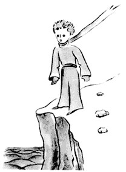
Не скоро я понял, откуда он явился. Маленький принц засыпал меня вопросами, но когда я спрашланеты?
Но он не ответил. Он тихо покачал головой, разглядывая мой самолет:
— Ну, на этом ты не мог прилететь издалека…
И надолго задумался о чем-то. Потом вынул из кармана моего барашка и погрузился в созерцание этого сокровища.
Можете себе представить, как разгорелось мое любопытство от этого полупризнания о «других планетах». И я попытался разузнать побольше:
— Откуда же ты прилетел, малыш? Где твой дом? Куда ты хочешь унести моего барашка?
Он помолчал в раздумье, потом сказал:
— Очень хорошо, что ты дал мне ящик: барашек будет там спать по ночам.
— Ну конечно. И если ты будешь умницей, я дам тебе веревку, чтобы днем его привязывать. И колышек.
Маленький принц нахмурился:
— Пр� Марс, Венера, существуют еще сотни других и среди них такие маленькие, что их даже в телескоп трудно разглядеть. Когда астроном открывает такую планетку, он дает ей не имя, а просто номер. Например: астероид 3251.
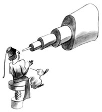
У меня есть серьезные основания полагать, что Маленький принц прилетел с планетки, которая называется «астероид В-612». Этот астероид был замечен в телескоп лишь один раз, в 1909 году, одним турецким астрономом.
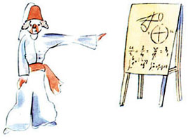
Астроном доложил тогда о своем замечательном открытии на Международном астрономическом конгрессе. Но никто ему не поверил, а все потому, что он был одет по-турецки. Уж такой народ эти взрослые!
К счастью для репутации астероида В-612, турецкий султан велел своим подданным под страхом смерти носить европейское платье. В 1920 году тот астроном снова доложил о своем открытии. На этот раз он был одет по последней моде, — и все с ним согласились.
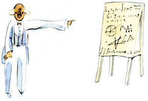
Яна тебя, как на несмышленого младенца. Но если сказать им: «Он прилетел с планеты, которая называется астероид В-612», — это их убедит, и они не станут докучать вам расспросами. Уж такой народ эти взрослые. Не стоит на них сердиться. Дети должны быть очень снисходительны к взрослым.
Но мы, те, кто понимает, что такое жизнь, мы, конечно, смеемся над номерами и цифрами! Я охотно начал бы эту повесть как волшебную сказку. Я хотел бы начать так:
«Жил да был Маленький принц. Он жил на планете, которая была чуть побольше его самого, и ему очень не хватало друга…». Те, кто понимает, что такое жизнь, сразу бы увидели, что все это чистая правда.
Ибо я совсем не хочу, чтобы мою книжку читали просто ради забавы. Сердце мое больно сжимается , когда я вспоминаю моего маленького друга, и нелегко мне о нем говорить. Прошло уже шесть лет с тех пор, как он вместе со своим барашком покинул меня. И я пытаюсь рассказать о нем для того, чтобы его не забыть. Это очень печально, когда забывают друзей. Не у всякого есть друг. И я боюсь стать таким, как взрослые, которым ничто не интересно, кроме цифр. Вот еще и поэтому я купил ящик с красками и ц��ждый день я узнавал что-нибудь новое о его планете, о том, как он ее покинул и как странствовал. Он рассказывал об этом понемножку, когда приходилось к слову. Так, на третий день я узнал о трагедии с баобабами.
Это тоже вышло из-за барашка. Казалось, Маленьким принцем вдруг овладели тяжкие сомнения, и он спросил:
— Скажи, ведь правда, барашки едят кусты?
— Да, правда.
— Вот хорошо!
Я не понял, почему это так важно, что барашки едят кусты. Но Маленький принц прибавил:
— Значит, они и баобабы тоже едят?
Я возразил, что баобабы — не кусты, а огромные деревья, вышиной с колокольню, и, если даже он приведет целое стадо слонов, им не съесть и одного баобаба.
Услыхав про слонов, Маленький принц засмеялся:
— Их пришлось бы поставить друг на друга…
— Есть такое твердое правило, — сказал мне позднее Маленький принц. — Встал поутру, умылся, привел себя в порядок — и сразу же приведи в порядок свою планету. Непременно надо каждый день выпалывать баобабы, как только их уже можно отличить от розовых кустов: молодые ростки у них почти одинаковые. Это очень скучная работа, но совсем не трудная.
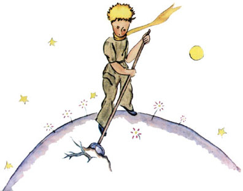
Однажды он посоветовал мне постараться и нарисовать такую картинку, чтобы и у нас дети это хорошо поняли.
— Если им когда-нибудь придется путешествовать, — сказал он, — это им пригодится. Иная работа может и подождать немного, вреда не будет. Но если дашь волю баобабам, беды не миновать. Я знал одну планету, на ней жил лентяй. Он не выполол вовремя три кустика…
О Маленький принц! Понемногу я понял также, как печальна и однообразна была твоя жизнь. Долгое время у тебя было лишь одно развлечение: ты любовался закатом. Я узнал об этом наутро четвертого дня, когда ты сказал:
— Я очень люблю закат. Пойдем посмотрим, как заходит солнце.
— Ну, придется подождать.
— Чего ждать?
— Чтобы солнце зашло.
Сначала ты очень удивился, а потом засмеялся над собою и сказал:
— Мне все кажется, что я у себя дома!
И в самом деле. Все знают, что, когда в Америке полдень, во Франции солнце уже заходит. И если бы за одну минуту перенестись во Францию, можно было бы полюбоваться закатом. К несчастью, до Франции очень, очень далеко. А на твоей планете тебе довольно было передвинуть стул на несколько шаго"#000">— Он есть все, что попадется.
— Даже такие цветы, у которых шипы?
— Да, и те, у которых шипы.
— Тогда зачем шипы?
Этого я не знал. Я был очень занят: в моторе заел один болт, и я старался его отвернуть. Мне было не по себе, положение становилось серьезным, воды почти не осталось, и я начал бояться, что моя вынужденная посадка плохо кончится.
— Зачем нужны шипы?
Задав какой-нибудь вопрос, Маленький принц никогда не отступался, пока не получал ответа. Неподатливый болт выводил меня из терпенья, и я ответил наобум:
— Шипы ни зачем не нужны, цветы выпускают их просто от злости.
— Вот как!
Наступило молчание. Потом он сказал почти сердито:
— Не верю я тебе! Цветы слабые. И простодуился. Он тряхнул головой, и ветер растрепал его золотые волосы.
— Я знаю одну планету, там живет такой господин с багровым лицом. Он за всю свою жизнь ни разу не понюхал цветка. Ни разу не поглядел на звезду. Он никогда никого не любил. И никогда ничего не делал. Он занят только одним: он складывает цифры. И с утра до ночи твердит одно: «Я человек серьезный! Я человек серьезный!» — совсем как ты. И прямо раздувается от гордости. А на самом деле он не человек. Он гриб.
— Что?
— Гриб!
Маленький принц даже побледнел от гнева.
— Миллионы лет у цветов растут шипы. И миллионы лет барашки все-таки едят цветы. Так неужели же это не серьезное дело — понять, почему они изо всех сил стараются отрастить шипы, если от шипов нет никакого толку? Неужели это не важно, что барашки и цветы воюют друг с другом? Да разве это не серьезнее и не важнее, чем арифметика толстого господина с багровым лицом? А если я знаю единственный в мире цветок, он растет только на моей ��вал себя ужасно неловким и неуклюжим. Я не знал, как позвать, чтобы он услышал, как догнать его душу, ускользающую от меня… Ведь она такая таинственная и неизведанная, эта страна слез.
VIII
Очень скоро я лучше узнал этот цветок. На планете Маленького принца всегда росли простые, скромные цветы — у них было мало лепестков, они занимали совсем мало места и никого не беспокоили. Они раскрывались поутру в траве и под вечер увядали. А этот пророс однажды из зерна, занесенного неведомо откуда, и Маленький принц не сводил глаз с крохотного ростка, не похожего на все остальные ростки и былинки. Вдруг это какая-нибудь новая разновидность баобаба? Но кустик быстро перестал тянуться ввысь, и на нем появился бутон. Маленький принц никогда еще не видал таких огромных бутонов и предчувствовал, что увидит чудо. А неведомая гостья, еще скрытая в стенах своей зеленой комнатки, все готовилась, все прихорашивалась. Она заботливо подбирала краски. Она наряжалась неторопливо, один за другим примеряя лепестки. Она не коре заметила:
— Кажется, пора завтракать. Будьте так добры, позаботьтесь обо мне…
Маленький принц очень смутился, разыскал лейку и полил цветок ключевой водой.
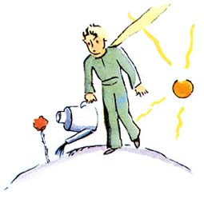
Скоро оказалось, что красавица горда и обидчива, и Маленький принц совсем с нею измучился. У нее было четыре шипа, и однажды она сказала ему:
— Пусть приходят тигры, не боюсь я их когтей!
— На моей планете тигры не водятся, — возразил Маленький принц. — И потом, тигры не едят траву.
— Я не трава, — обиженно заметил цветок.
— Простите меня…
— Нет, тигры мне не страшны, но я ужасно боюсь сквозняков. У вас нет ширмы?
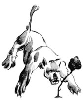
«Растение, а боится сквозняков… очень странно… — подумал Маленький принц. �. — Никогда не надо слушать, что говорят цветы. Надо просто смотреть на них и дышать их ароматом. Мой цветок напоил благоуханием всю мою планету, а я не умел ему радоваться. Эти разговоры о когтях и тиграх… Они должны бы меня растрогать, а я разозлился…
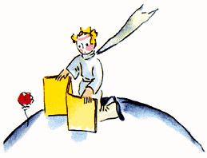
И еще он признался:
— Ничего я тогда не понимал! Надо было судить не по словам, а по делам. Она дарила мне свой аромат, озаряла мою жизнь. Я не должен был бежать. За этими жалкими хитростями и уловками я должен был угадать нежность. Цветы так непоследовательны! Но я был слишком молод, я еще не умел любить.
IX
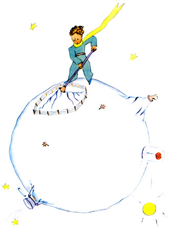
Как я понял, он решил странствовать с перелетными птицами. В последнее утро он старательней обычного прибрал свою планету. Он заботливо прочистил действующие вулканы. У него было два действующих вулкана. На них очень удобно по утрам разогревать � width="2em" align="justify">Она кашлянула. Но не от простуды.
— Я была глупая, — сказала она наконец. — Прости меня. И постарайся быть счастливым.
И ни слова упрека. Маленький принц был очень удивлен. Он застыл, смущенный и растерянный, со стеклянным колпаком в руках. Откуда эта тихая нежность?
— Да, да, я люблю тебя, — услышал он. — Моя вина, что ты этого не знал. Да это и не важно. Но ты был такой же глупый, как и я. Постарайся быть счастливым… Оставь колпак, он мне больше не нужен.
— Но ветер…
— Не так уж я простужена… Ночная свежесть пойдет мне на пользу. Ведь я — цветок.
— Но звери, насекомые…
— Должна же я стерпеть двух-трех гусениц, если хочу познакомиться с бабочками. Они, должно быть, прелестны. А то кто же станет меня навещать? Ты ведь будешь далеко. А больших зверей я не боюсь. У меня тоже есть когти.
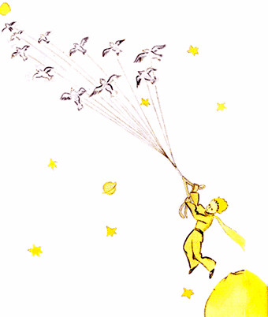
Он не знал, что короли смотрят на мир очень упрощенно: для них все люди — подданные.
— Подойди, я хочу тебя рассмотреть, — сказал король, ужасно гордый тем, что он может быть для кого-то королем.
Маленький принц оглянулся — нельзя ли где-нибудь сесть, но великолепная горностаевая мантия покрывала всю планету. Пришлось стоять, а он так устал… и вдруг он зевнул.
— Этикет не разрешает зевать в присутствии монарха, — сказал король. — Я запрещаю тебе зевать.
— Я нечаянно, — ответил Маленький принц, очень смущенный. — Я долго был в пути и совсем не спал…
— Ну, тогда я повелеваю тебе зевать, — сказал король. — Многие годы я не видел, чтобы кто-нибудь зевал. Мне это даже любопытно. Итак, зевай! Таков мой приказ.
— Но я робею… я больше не могу… — вымолвил Мален��ваю: спрашивай! — поспешно сказал король.
— Ваше величество… чем вы правите?
— Всем, — просто ответил король.
— Всем?
Король повел рукою, скромно указывая на свою планету, а также и на другие планеты, и на звезды.
— И всем этим вы правите? — переспросил Маленький принц.
— Да, — отвечал король.
Ибо он был поистине полновластный монарх и не знал никаких пределов и ограничений.
— И звезды вам повинуются? — спросил Маленький принц.
— Ну конечно, — отвечал король. — Звезды повинуются мгновенно. Я не терплю непослушания.
Маленький принц был восхищен. Вот бы ему такое могущество! Он бы тогда любовался закатом солнца не сорок четыре раза в день, а семьдесят два, а то и сто, и двести раз, и при этом ему дheight="0pt" width="2em" align="justify">— Будет тебе и заход солнца. Я потребую, чтобы солнце зашло. Но сперва дождусь благоприятных условий, ибо в этом и состоит мудрость правителя.
— А когда условия будут благоприятные? — осведомился Маленький принц.
— Гм, гм, — ответил король, листая толстый календарь. — Это будет… Гм, гм… Сегодня это будет в семь часов сорок минут вечера. И тогда ты увидишь, как точно исполнится мое повеление.
Маленький принц зевнул. Жаль, что тут не поглядишь на заход солнца, когда хочется! И, по правде говоря, ему стало скучновато.
— Мне пора, — сказал он королю. — Больше мне здесь нечего делать.
— Останься! — сказал король: он был очень горд тем, что у него нашелся подданный, и не хотел с ним расставаться. — Останься, я назначу тебя министром.
— Министром чего?
— Ну… юстицичь старую крысу, она ведь у нас одна.
— Не люблю я выносить смертные приговоры, — сказал Маленький принц. — И вообще мне пора.
— Нет, не пора, — возразил король.
Маленький принц уже совсем собрался в дорогу, но ему не хотелось огорчать старого монарха.
— Если вашему величеству угодно, чтобы ваши повеления беспрекословно исполнялись, — сказал он, — вы могли бы отдать благоразумное приказание. Например, повелите мне пуститься в путь, не мешкая ни минуты… Мне кажется, условия для этого самые что ни на есть благоприятные.
Король не отвечал, и Маленький принц немного помедлил в нерешимости, потом вздохнул и отправился в путь.
— Назначаю тебя послом! — поспешно крикнул вдогонку ему король.
И вид у него при этом был такой, точно он не потерпел бы никаких возражений.
«Странный �� снял шляпу и скромно раскланялся.
«Здесь веселее, чем у старого короля», — подумал Маленький принц. И опять стал хлопать в ладоши. А честолюбец опять стал раскланиваться, снимая шляпу.
Так минут пять подряд повторялось одно и то же, и Маленькому принцу это наскучило.
— А что надо сделать, чтобы шляпа упала? — спросил он.
Но честолюбец не слышал. Тщеславные люди глухи ко всему, кроме похвал.
— Ты и в самом деле мой восторженный почитатель? — спросил он Маленького принца.
— А как это — почитать?
— Почитать значит признавать, что на этой планете я всех красивее, всех наряднее, всех богаче и всех умней.
— Да ведь на твоей планете больше и нет никого!
— Ну, доставь мне удовольс�="#000">— О чем забыть? — спросил Маленький принц; ему стало жаль пьяницу.
— Хочу забыть, что мне совестно, — признался пьяница и повесил голову.
— Отчего же тебе совестно? — спросил Маленький принц, ему очень хотелось помочь бедняге.
— Совестно пить! — объяснил пьяница, и больше от него нельзя было добиться ни слова.
И Маленький принц отправился дальше, растерянный и недоумевающий.
«Да, право же, взрослые очень, очень странный народ», — думал он, продолжая путь.
XIII
Четвертая планета принадлежала деловому человеку. Он был так занят, что при появлении Маленького принца даже головы не поднял.
— Добрый день, — сказал ему Маленький принц. — Ваша папироса погасла.�да сделал четыре ошибки в сложении. Во второй раз, одиннадцать лет тому назад, у меня был приступ ревматизма. От сидячего образа жизни. Мне разгуливать некогда. Я человек серьезный. Третий раз… вот он! Итак, стало быть, пятьсот миллионов…
— Миллионов чего?
Деловой человек понял, что надо ответить, а то не будет ему покоя.
— Пятьсот миллионов этих маленьких штучек, которые иногда видны в воздухе.
— Это что же, мухи?
— Да нет же, такие маленькие, блестящие.
— Пчелы?
— Да нет же. Такие маленькие, золотые, всякий лентяй как посмотрит на них, так и размечтается. А я человек серьезный. Мне мечтать некогда.
— А, звезды?
— Вот-вот. Звезды.
И стал спрашивать дальше:
— А как можно владеть звездами?
— Звезды чьи? — ворчливо спросил делец.
— Не знаю. Ничьи.
— Значит, мои, потому что я первый до этого додумался.
— И этого довольно?
— Ну конечно. Если ты найдешь алмаз, у которого нет хозяина, — значит, он твой. Если ты найдешь остров, у которого нет хозяина, он твой. Если тебе первому придет в голову какая-нибудь идея, ты берешь на нее патент: она твоя. Я владею звездами, потому что до меня никто не догадался ими завладеть.
— Вот это верно, — сказал Маленький принц. — И что же ты с ними делаешь?
— Распоряжаюсь ими, — ответил делец. — Считаю их и пересчитываю. Это очень трудно. Но я человек серьезный.
Однако Малень�ой пользы…
Деловой человек открыл было рот, но так и не нашелся что ответить, и Маленький принц отправился дальше.
«Нет, взрослые и правда поразительный народ», — простодушно говорил он себе, продолжая путь.
XIV
Пятая планета была очень занятная. Она оказалась меньше всех. На ней только и помещалось что фонарь да фонарщик. Маленький принц никак не мог понять, для чего на крохотной, затерявшейся в небе планетке, где нет ни домов, ни жителей, нужны фонарь и фонарщик. Но он подумал:
«Может быть, этот человек и нелеп. Но он не так нелеп, как король, честолюбец, делец и пьяница. В его работе все-таки есть смысл. Когда он зажигает свой фонарь — как будто рождается еще одна звезда или цветок. А когда он гасит фонарь — как будто звезда или цветок засыпают. Прекрасное з�� у меня ремесло. Когда-то это имело смысл. Я гасил фонарь по утрам, а вечером опять зажигал. У меня оставался день, чтобы отдохнуть, и ночь, что бы выспаться…
— А потом уговор переменился?
— Уговор не менялся, — сказал фонарщик. — В том-то и беда! Моя планета год от году вращается все быстрее, а уговор остается прежний.
— И как же теперь? — спросил Маленький принц.
— Да вот так. Планета делает полный оборот за одну минуту, и у меня нет ни секунды передышки. Каждую минуту я гашу фонарь и опять его зажигаю.
— Вот забавно! Значит, у тебя день длится всего одну минуту!
— Ничего тут нет забавного, — возразил фонарщик. — Мы с тобой разговариваем уже целый месяц.
— Целый месяц?!
— Ну да. Тридцать минут. Тридцать дней. Добрый вечер!
И он опять засв��а плохо твое дело, — посочувствовал Маленький принц.
— Плохо мое дело, — подтвердил фонарщик. — Добрый день.
И погасил фонарь.
«Вот человек, — сказал себе Маленький принц, продолжая путь, — вот человек, которого все стали бы презирать — и король, и честолюбец, и пьяница, и делец. А между тем из них всех он один, по-моему, не смешон. Может быть, потому, что он думает не только о себе».
Маленький принц вздохнул.
«Вот бы с кем подружиться, — подумал он еще. — Но его планетка уж очень крохотная. Там нет места для двоих…»
Он не смел себе признаться в том, что больше всего жалеет об этой чудесной планетке еще по одной причине: за двадцать четыре часа на ней можно любоваться закатом тысячу четыреста сорок раз!
XV
— Ваша планета очень красивая, — сказал он. — А океаны у вас есть?
— Этого я не знаю, — сказал географ.
— О-о-о… — разочарованно протянул Маленький принц. — А горы есть?
— Не знаю, — повторил географ.
— А города, реки, пустыни?
— И этого я тоже не знаю.
— Но ведь вы географ!
— Вот именно, — сказал старик. — Я географ, а не путешественник. Мне ужасно не хватает путешественников. Ведь не географы ведут счет городам, рекам, горам, морям, океанам и пустыням. Географ — слишком важное лицо, ему некогда разгуливать. Он не выходит из своего кабинета. Но он принимает у себя путешественников и записывает их рассказы. И если кто-нибудь из них расскажет что-нибудь интересное, географ наводит справки и проверяет, порядочный ли челове�p height="0pt" width="2em" align="justify">И он раскрыл толстенную книгу и очинил карандаш. Рассказы путешественников сначала записывают карандашом. И только после того как путешественник представит доказательства, можно записать его рассказ чернилами.
— Слушаю тебя, — сказал географ.
— Ну, у меня там не так уж интересно, — промолвил Маленький принц. — У меня все очень маленькое. Есть три вулкана. Два действуют, а один давно потух. Но мало ли что может случиться…
— Да, все может случиться, — подтвердил географ.
— Потом у меня есть цветок.
— Цветы мы не отмечаем, — сказал географ.
— Почему?! Это ведь самое красивое!
— Потому, что цветы эфемерны.
— Как это — эфемерны?
— Книги по географии — самые др�� покинутом цветке. Но тут же мужество вернулось к нему.
— Куда вы посоветуете мне отправиться? — спросил он географа.
— Посети планету Земля, — отвечал географ. — У нее неплохая репутация…
И Маленький принц пустился в путь, но мысли его были о покинутом цветке.
XVI
Итак, седьмая планета, которую он посетил, была Земля.
Земля — планета не простая! На ней насчитывается сто одиннадцать королей (в том числе, конечно, и негритянских), семь тысяч географов, девятьсот тысяч дельцов, семь с половиной миллионов пьяниц, триста одиннадцать миллионов честолюбцев, итого около двух миллиардов взрослых.
Чтобы дать вам понятие о том, как велика Земля, скажу лишь, что, пока не изобрели электричество, на всех шести континентах приходилось держать целую армию фонарщиков — четыреста шестьдесят две тысячи пятьсот одиннадцать человек.
Когда очень хочешь сострить, иной раз поневоле приврешь. Рассказывая о фонарщиках, я несколько погрешил против истины. Боюсь, что у тех, кто не знает нашей планеты, сложится о ней ложное представление. Люди занимают на Земле не так уж много места. Если бы два миллиарда ее жителей сошлись и стали сплошной толпой, как на митинге, все они без труда уместились бы на пространстве размером двадцать миль в длину и двадцать в ширину. Все человечество можно бы составить плечом к плечу на самом маленьком островке в Тихом океане.
Взрослые вам, конечно, не поверят. Они воображают, что занимают очень много места. Они кажутся сами себе величественными, как баобабы. А вы посоветуйте им сделать точный расчет. Им это понравится, они ведь обожают цифры. Вы же не тратьте время на эту арифметику. Это ни к чему. Вы и без того мне верите.
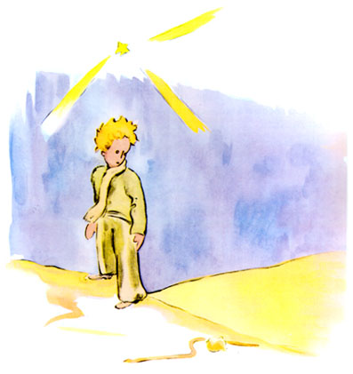
Итак, попав на землю, Маленький принц не увидел ни души и очень удивился. Он подумал даже, что залетел по ошибке на какую-то другую планету. Но тут в песке ш�� цветком, — признался Маленький принц.
— А, вот оно что…
И оба умолкли.
— А где же люди? — вновь заговорил наконец Маленький принц. — В пустыне все-таки одиноко…
— Среди людей тоже одиноко, — заметила змея.
Маленький принц внимательно посмотрел на нее.
— Странное ты существо, — сказал он. — Не толще пальца…
— Но могущества у меня больше, чем в пальце короля, — возразила змея.
Маленький принц улыбнулся:
— Ну, разве ты уж такая могущественная? У тебя даже лап нет. Ты и путешествовать не можешь…
— Я могу унести тебя дальше, чем любой корабль, — сказала змея.
И обвилась вокруг щиколотки Маленького пр��азал Маленький принц.
— Здравствуй, — отвечал цветок.
— А где люди? — вежливо спросил Маленький принц.
Цветок видел однажды, как мимо шел караван.
— Люди? Ах да… Их всего-то, кажется, шесть или семь. Я видел их много лет назад. Но где их искать — неизвестно. Их носит ветром. У них нет корней, это очень неудобно.
— Прощай, — сказал Маленький принц.
— Прощай, — сказал цветок.
XIX
Маленький принц поднялся на высокую гору. Прежде он никогда не видал гор, кроме своих трех вулканов, которые были ему по колено. Потухший вулкан служил ему табуретом. И теперь он подумал: «С такой высокой горы я сразу увижу всю эту планету и всех людей». Но увидел только скалы, острые �дям.
— Добрый день, — сказал он.
Перед ним был сад, полный роз.
— Добрый день, — отозвались розы.
И Маленький принц увидел, что все они похожи на его цветок.
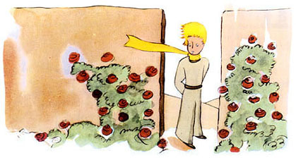
— Кто вы? — спросил он, пораженный.
— Мы — розы, — отвечали розы.
— Вот как… — промолвил Маленький принц.
И почувствовал себя очень-очень несчастным. Его красавица говорила ему, что подобных ей нет во всей вселенной. И вот перед ним пять тысяч точно таких же цветов в одном только саду!
«Как бы она рассердилась, если бы увидела их! — подумал Маленький принц. — Она бы ужасно раскашлялась и сделала вид, что умирает, лишь бы не показаться смешной. А мне пришлось бы ходить за ней, как за больн Я — Лис, — сказал Лис.
— Поиграй со мной, — попросил Маленький принц. — Мне так грустно…
— Не могу я с тобой играть, — сказал Лис. — Я не приручен.
— Ах, извини, — сказал Маленький принц.
Но, подумав, спросил:
— А как это — приручить?
— Ты не здешний, — заметил Лис. — Что ты здесь ищешь?
— Людей ищу, — сказал Маленький принц. — А как это — приручить?
— У людей есть ружья, и они ходят на охоту. Это очень неудобно! И еще они разводят кур. Только этим они и хороши. Ты ищешь кур?
— Нет, — сказал Маленький принц. — Я ищу друзей. А как это — приручить?
— Нет в мире совершенства! — вздохнул Лис.
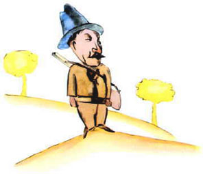
Но потом он вновь заговорил о том же:
— Скучная у меня жизнь. Я охочусь за курами, а люди охотятся за мною. Все куры одинаковы, и люди все одинаковы. И живется мне скучновато. Но если ты меня приручишь, моя жизнь словно солнцем озарится. Твои шаги я стану различать среди тысяч других. Заслышав людские шаги, я всегда убегаю и прячусь. Но твоя походка позовет меня, точно музыка, и я выйду из своего убежища. И потом — смотри! Видишь, вон там, в полях, зреет пшеница? Я не ем хлеба. Колосья мне не нужны. Пшеничные поля ни о чем мне не говорят. И это грустно! Но у тебя золотые волосы. И как чудесно будет, когда ты меня приручишь! Золотая пшеница станет напоминать мне тебя. И я полюблю шелест колосьев на ветру…
Лис замолчал и долго смотрел на Маленького принца. Потом сказал:
— Пожалуйста… приручи меня!
— Я бы рад, — отвечал Ма�иходить в четыре часа, я уже с трех часов почувствую себя счастливым. И чем ближе к назначенному часу, тем счастливее. В четыре часа я уже начну волноваться и тревожиться. Я узнаю цену счастью! А если ты приходишь всякий раз в другое время, я не знаю, к какому часу готовить свое сердце… Нужно соблюдать обряды.
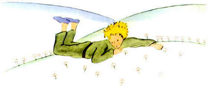
— А что такое обряды? — спросил Маленький принц.
— Это тоже нечто давно забытое, — объяснил Лис. — Нечто такое, отчего один какой-то день становится не похож на все другие дни, один час — на все другие часы. Вот, например, у моих охотников есть такой обряд: по четвергам они танцуют с деревенскими девушками. И какой же это чудесный день — четверг! Я отправляюсь на прогулку и дохожу до самого виноградника. А если бы охотники танцевали когда придется, все дни были бы одинаковы и я никогда не знал бы отдыха.
Так Маленький принц приручил Лиса. И вот настал час прощанья.
— Я�личался от ста тысяч других лисиц. Но я с ним подружился, и теперь он — единственный в целом свете.
Розы очень смутились.
— Вы красивые, но пустые, — продолжал Маленький принц. — Ради вас не захочется умереть. Конечно, случайный прохожий, поглядев на мою розу, скажет, что она точно такая же, как вы. Но мне она одна дороже всех вас. Ведь это ее, а не вас я поливал каждый день. Ее, а не вас накрывал стеклянным колпаком. Ее загораживал ширмой, оберегая от ветра. Для нее убивал гусениц, только двух или трех оставил, чтобы вывелись бабочки. Я слушал, как она жаловалась и как хвастала, я прислушивался к ней, даже когда она умолкала. Она — моя.
И Маленький принц возвратился к Лису.
— Прощай… — сказал он.
— Прощай, — сказал Лис. — Вот мой секрет, он очень прост: зорко одно лишь сердце. Самого главного глазами не увидишь.
— Самого главноeight="0pt" width="2em" align="justify">И скорый поезд, сверкая освещенными окнами, с громом промчался мимо, и будка стрелочника вся задрожала.
— Как они спешат, — удивился Маленький принц. — Чего они ищут?
— Даже сам машинист этого не знает, — сказал стрелочник.
И в другую сторону, сверкая огнями, с громом пронесся еще один скорый поезд.
— Они уже возвращаются? — спросил Маленький принц.
— Нет, это другие, — сказал стрелочник. — Это встречный.
— Им было нехорошо там, где они были прежде?
— Там хорошо, где нас нет, — сказал стрелочник.
И прогремел, сверкая, третий скорый поезд.
— Они хотят догнать тех, первых? — спросил Маленький принц.— А что делать в эти пятьдесят три минуты?
— Да что хочешь.
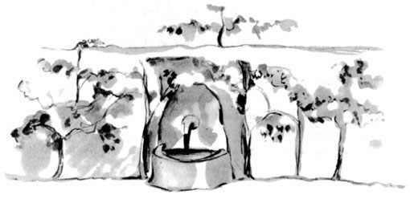
«Будь у меня пятьдесят три минуты свободных, — подумал Маленький принц, — я бы просто-напросто пошел к роднику…»
ХXIV
Миновала неделя с тех пор, как я потерпел аварию, и, слушая про торговца пилюлями, я выпил последний глоток воды.
— Да, — сказал я Маленькому принцу, — все, что ты рассказываешь, очень интересно, но я еще не починил свой самолет, у меня не осталось ни капли воды, и я тоже был бы счастлив, если бы мог просто-напросто пойти к роднику.
— Лис, с которым я подружился…
— Милый мой, мне сейчас не до Лиса!
— Почему?Но он не ответил. Он сказал просто:
— Вода бывает нужна и сердцу…
Я не понял, но промолчал. Я знал, что не следует его расспрашивать.
Он устал. Опустился на песок. Я сел рядом. Помолчали. Потом он сказал:
— Звезды очень красивые, потому что где-то там есть цветок, хоть его и не видно…
— Да, конечно, — сказал я только, глядя на волнистый песок, освещенный луною.
— И пустыня красивая… — прибавил Маленький принц.
Это правда. Мне всегда нравилось в пустыне. Сидишь на песчаной дюне. Ничего не видно. Ничего не слышно. И все же в тишине что-то светится…
— Знаешь, отчего хороша пустыня? — сказал он. — Где-то в ней скрываются родники…
Я был поражен, вдруг я понял, что означает таинственный свет, исходящий от песков. Когда-то, маленьким мальчиком, я жил в старом-престаром доме — рассказывали, будто �тильника, даже когда он спит… И я понял, что он еще более хрупок, чем кажется. Светильники надо беречь: порыв ветра может погасить их…
Так я шел — и на рассвете дошел до колодца.
XXV
— Люди забираются в скорые поезда, но они уже сами не понимают, чего ищут, — сказал Маленький принц. — Поэтому они не знают покоя и бросаются то в одну сторону, то в другую…
Потом прибавил:
— И все напрасно…
Колодец, к которому мы пришли, был не такой, как все колодцы в Сахаре. Обычно здесь колодец — просто яма в песке. А это был самый настоящий деревенский колодец. Но поблизости не было никакой деревни, и я подумал, что это сон.
— Как странно, — сказал я Маленькому принцу, — тут все приготовлено: и ворот, и ведро, и веревка…
Он засмеялся, �. Она была, как подарок сердцу. Когда я был маленький, так светились для меня рождественские подарки: сияньем свеч на елке, пеньем органа в час полночной мессы, ласковыми улыбками.
— На твоей планете, — сказал Маленький принц, — люди выращивают в одном саду пять тысяч роз… и не находят того, что ищут…
— Не находят, — согласился я.
— А ведь то, чего они ищут, можно найти в одной-единственной розе, в глотке воды…
— Да, конечно, — согласился я.
И Маленький принц сказал:
— Но глаза слепы. Искать надо сердцем.
Я выпил воды. Дышалось легко. На рассвете песок становится золотой, как мед. И от этого тоже я был счастлив. С чего бы мне грустить?..
— Ты должен сдержать слово, — мягко сказал Маленький принц, снова садясь рядом со мною.
И умолк. Потом прибавил:
— Я упал совсем близко отсюда…
И покраснел.
И опять, бог весть почему, тяжело стало у меня на душе.
Все-таки я спросил:
— Значит, неделю назад, в то утро, когда мы познакомились, ты не случайно бродил тут совсем один, за тысячу миль от человеческого жилья? Ты возвращался к тому месту, где тогда упал?
Маленький принц покраснел еще сильнее.
А я прибавил нерешительно:
— Может быть, это потому, что исполняется год?..
И снова он покраснел. Он не ответил ни на один мой вопрос, но ведь когда краснеешь, это значит «да», не так ли?
— Мне страшно… — со вздохом начал я.
— Ну, конечно. Ты найдешь мои следы на песке. И тогда жди. Сегодня ночью я туда приду.
До стены оставалось двадцать метров, а я все еще ничего не видел.
После недолгого молчания Маленький принц спросил:
— А у тебя хороший яд? Ты не заставишь меня долго мучиться?
Я остановился, и сердце мое сжалось, но я все еще не понимал.
— Теперь уходи, — сказал Маленький принц. — Я хочу спрыгнуть вниз.
Тогда я опустил глаза, да так и подскочил! У подножья стены, подняв голову к Маленькому принцу, свернулась желтая змейка, из тех, чей укус убивает в полминуты. Нащупывая в кармане револьвер, я бегом бросился к ней, но при звуке шагов змейка тихо заструилась по песку, словно умирающий ручеек, и с еле слышным металлически звоном неторопливо скрылась меж камней.
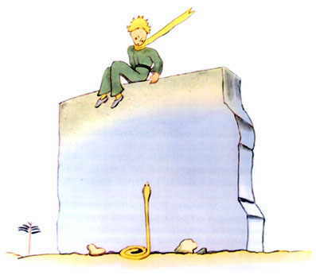
Я подбежал к стене ont color="#000">— Это гораздо дальше… и гораздо труднее…
Все было как-то странно. Я крепко обнимал его, точно малого ребенка, и, однако, мне казалось, будто он ускользает, проваливается в бездну, и я не в силах его удержать…
Он задумчиво смотрел куда-то вдаль.
— У меня останется твой барашек. И ящик для барашка. И намордник…
И он печально улыбнулся.
Я долго ждал. Он словно бы приходил в себя.
— Ты напугался, малыш…
Ну еще бы не напугаться! Но он тихонько засмеялся:
— Сегодня вечером мне будет куда страшнее…
И снова меня оледенило предчувствие непоправимой беды. Неужели, неужели я никогда больше не услышу, как он смеется? Этот смех для меня — точно родник в пустыне.
—��т для тебя просто — одна из звезд. И ты полюбишь смотреть на звезды… Все они станут тебе друзьями. И потом, я тебе кое-что подарю…
И он засмеялся.
— Ах, малыш, малыш, как я люблю, когда ты смеешься!
— Вот это и есть мой подарок… это будет, как с водой…
— Как так?
— У каждого человека свои звезды. Одним — тем, кто странствует, — они указывают путь. Для других это просто маленькие огоньки. Для ученых они — как задача, которую надо решить. Для моего дельца они — золото. Но для всех этих людей звезды — немые. А у тебя будут совсем особенные звезды…
— Как так?
— Ты посмотришь ночью на небо, а ведь там будет такая звезда, где я живу, где я смеюсь, — и ты услышишь, что все звезды смеются. У тебя будут звезды, которые умеют смеяться!
— Видишь ли… это еще из-за змеи. Вдруг она тебя ужалит… Змеи ведь злые. Кого-нибудь ужалить для них удовольствие.
— Я тебя не оставлю.
Он вдруг успокоился:
— Правда, на двоих у нее не хватит яда…
В эту ночь я не заметил, как он ушел. Он ускользнул неслышно. Когда я наконец нагнал его, он шел быстрым, решительным шагом.
— А, это ты… — сказал он только.
И взял меня за руку. Но что-то его тревожило.
— Напрасно ты идешь со мной. Тебе будет больно на меня смотреть. Тебе покажется, будто я умираю, но это неправда…
Я молчал.
— Видишь ли… это очень далеко. Мое тело слишком тяжелое. Мне его не унести.
Я молчалх шипа, больше ей нечем защищаться от мира…
Я тоже сел, потому что у меня подкосились ноги. Он сказал:
— Ну… вот и все…
Помедлил еще минуту и встал. И сделал один только шаг. А я не мог шевельнуться.
Точно желтая молния мелькнула у его ног. Мгновение он оставался недвижим. Не вскрикнул. Потом упал — медленно, как падает дерево. Медленно и неслышно, ведь песок приглушает все звуки.
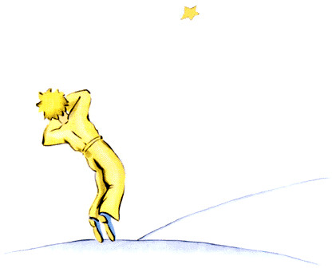
XXVII
И вот прошло уже шесть лет… Я еще ни разу никому об этом не рассказывал. Когда я вернулся, товарищи рады были вновь увидеть меня живым и невредимым. Грустно мне было, но я говорил им:
— Это я просто устал…
И все же понемногу я утешился. То есть… Не совсем. Но я знаю, он возвратился на свою планетку, ведь, когда р�ттого, что где-то в безвестном уголке вселенной барашек, которого мы никогда не видели, быть может, съел не знакомую нам розу.
Взгляните на небо. И спросите себя: «Жива ли та роза или ее уже нет? Вдруг барашек ее съел?» И вы увидите: все станет по-другому…
И никогда ни один взрослый не поймет, как это важно!
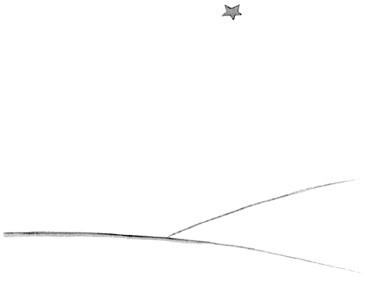
Это, по-моему, самое красивое и самое печальное место на свете. Этот же уголок пустыни нарисован и на предыдущей странице, но я нарисовал еще раз, чтобы вы получше его разглядели. Здесь Маленький принц впервые появился на Земле, а потом исчез.
Всмотритесь внимательней, чтобы непременно узнать это место, если когда-нибудь вы попадете в Африку, в пустыню. Если вам случится тут проезжать, заклинаю вас, не спешите, помедлите немного под этой звездой! И если к вам подойдет маленький мальчик с золотыми волосами, если он будет звонко смеяться и ничего не от�h="-14pt">XIV